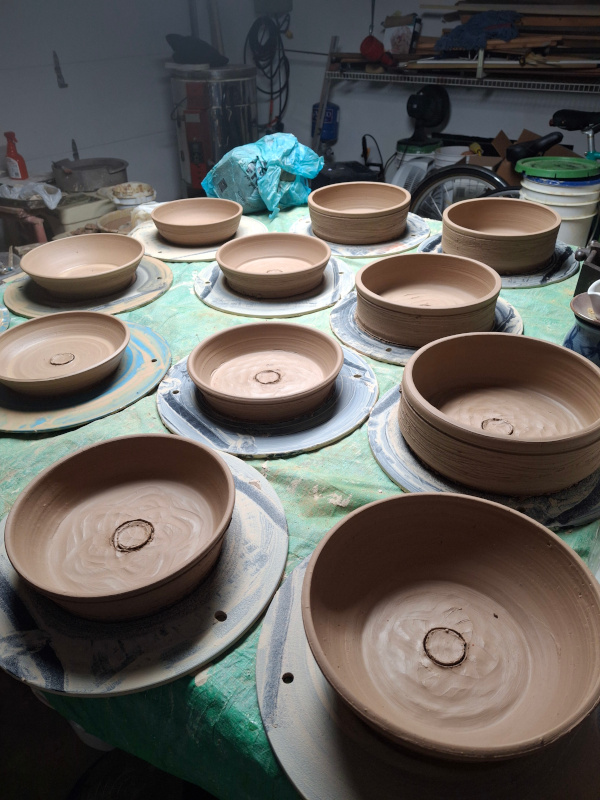
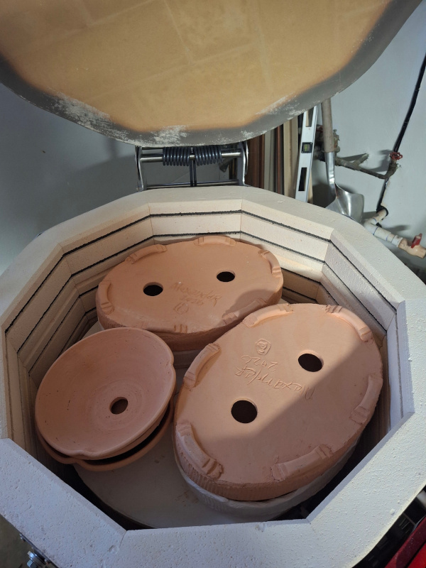
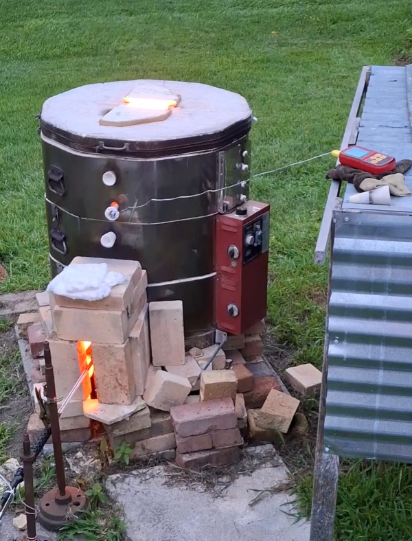

Where the work is made.
ClaycrazE is a small working studio devoted to form, surface, and the quiet character of fired clay. What happens here is simple: work is made, allowed to settle, and then given over to fire.

Forms rest before firing. At this stage, everything remains mutable. Surface, color, and final character are still unknown.

The kiln is loaded and ready. This is the moment where intention passes into process. The programmable kiln allows for control, but outcomes still carry variation.

The weather must be just right to fire this kiln. Constant vigilance is the key to successful outcomes. Reduction firing expands the possibilities for rich colors and flame blushes that can be achieved in no other way.
The studio operates two kilns: "Poor Boy," a converted gas-fired Skutt 1027, and a modern programmable Skutt 1027 electric kiln. Together they allow for both variation and control in the firing process.
One aim of the GENE project is to observe these transitions — from rest to heat, from intention to result — and to better understand timing in the work.